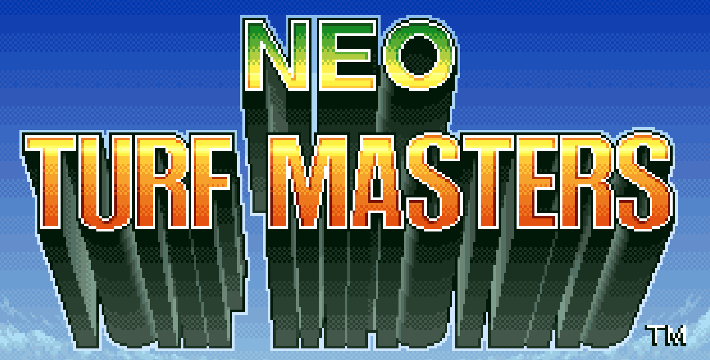
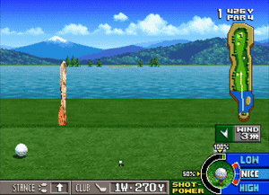
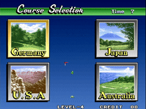
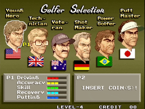
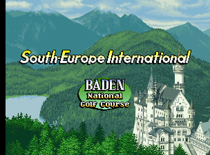
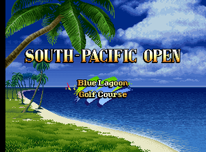
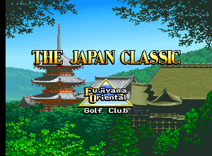

Neo Turf Masters: Arcade Golf Perfection
SNK's legendary golf game, featuring nuanced characters, challenging courses, and endless fun. Neo Turf Masters is the ultimate arcade golf experience.
Arcade-Style Golf
Fast-paced, easy-to-learn golf mechanics that balance realism with satisfying arcade gameplay.
Four Global Courses
Each course offers unique holes, terrain, hazards, and difficulties across beautiful locations.

Iconic Characters
Six playable characters, each with unique skills and play styles. Play to a strategic advantage.
The Four Courses of Neo Turf Masters
Neo Turf Masters features four beautifully designed golf courses set across the globe. With bright fairways, verdant rough, and dangerous hazards, the courses demand precision and strategy, making every round tense and rewarding.
Baden National Golf Course – Germany
Baden National Golf Course, in Germany, is known for its hard putts, and tree hazards.
Grand Canyon Golf Course – USA
Grand Canyon Golf Course, in the United States, is a course of distances, with longer holes than any other course.

Blue Lagoon Golf Course – Australia
Blue Lagoon Golf Course, in Australia, features holes surrounded by water, and gives an advantage to distance golfers.
Fujiyama Oriental Golf Club – Japan
Fujiyama Oriental Golf Club, in Japan, is known for its short holes and tricky approaches. Strong control is king on this course.
Playable Characters
Each selectable golfer brings unique skills and weaknesses to the table, adding depth and nuance to the game.
Young Hero – George Spinner
The American golfer is George Spinner, AKA "Young Hero". While boasting no weaknesses, this character also has no particular strengths.
The Technician – Thomas Stewart
The British golfer is Thomas Stewart, AKA "Technician". He has very slow shot meters, allowing for high accuracy, however, he has the worst distance in the game.
The Veteran – Frank Adams
The Australian golfer is Frank Adams, AKA "Veteran". He has amazing recovery, which makes the rough act as fairway, however he has terrible distance and putting.
Shot Maker – Robert Landolt
The German golfer is Robert Landolt, AKA "Shot Maker". He has high power, slow meters, but poor recovery.
Power Golfer – Fernando Almeida
The Brazilian golfer is Fernando Almeida, AKA "Power Golfer". He has by far the highest power, but struggles in all other aspects.
Putt Master – Toyoshige Takeno
The Japanese golfer is Toyoshige Takeno, AKA "Putt Master". He has the best club selection and putting, but fast meters and poor recovery.
Arcade Controls
Approachable but in-depth golf mechanics that reward careful timing, planning, and precision. With different shot windows and putt meters on each character, you must play to your strengths.
Want to learn more?
If you're curious to learn more in depth about Neo Turf Masters, visit their Wiki!